| Performance measure | Strategic diagram |
| coreDocuments-documentsCount | 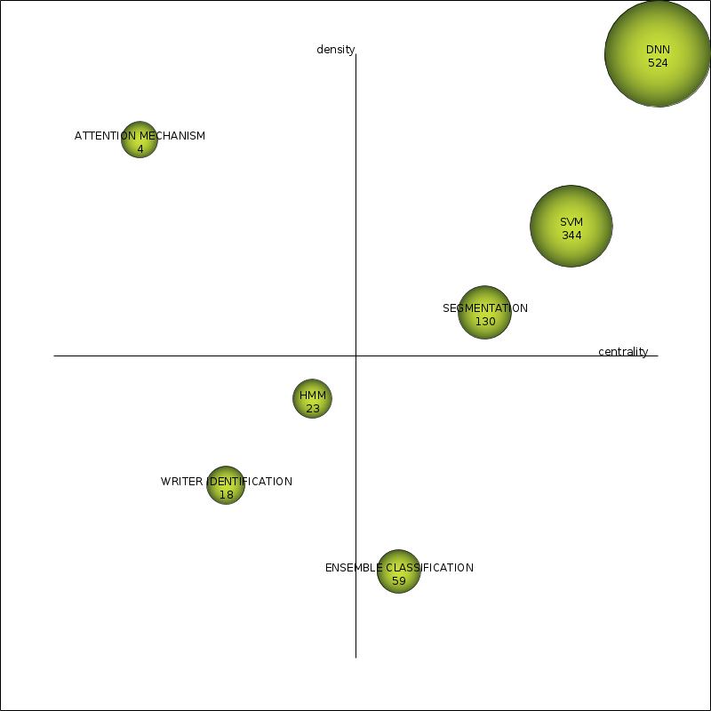 |
| coreDocuments-hIndex | 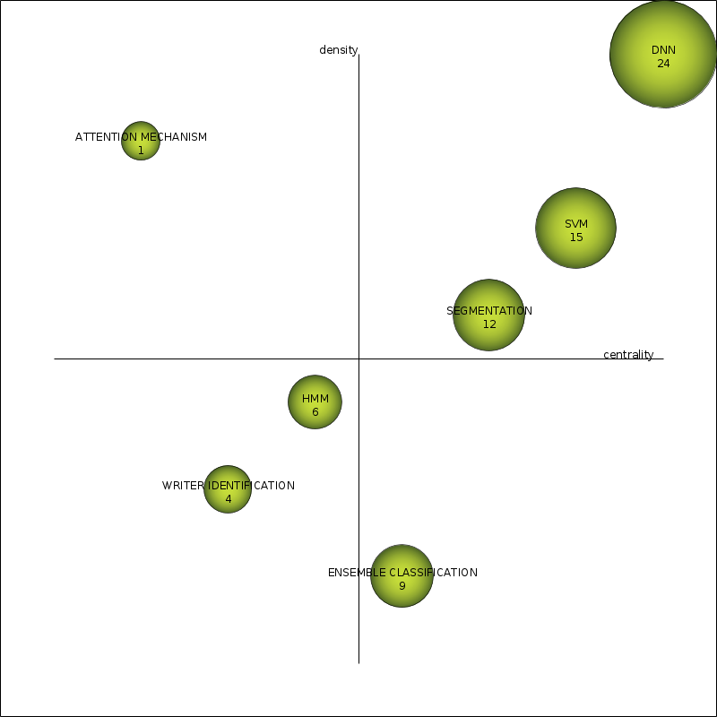 |
| coreDocuments-averageCitations | 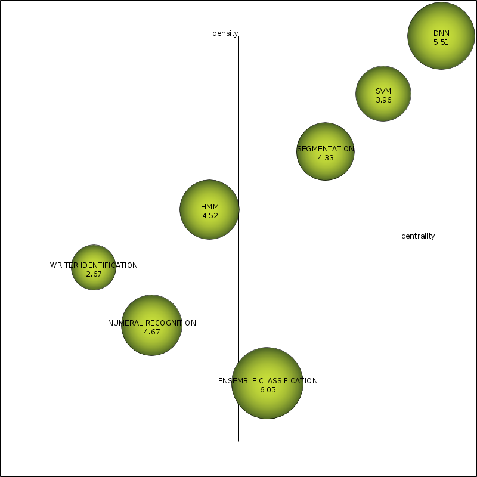 |
| coreDocuments-sumCitations | 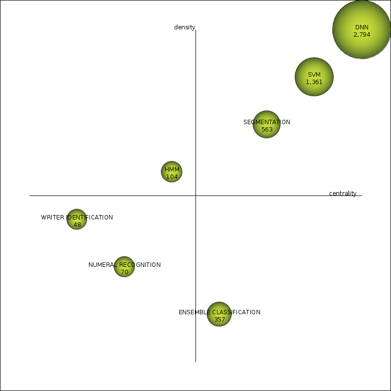 |
| unionDocuments-documentsCount | |
| unionDocuments-hIndex | 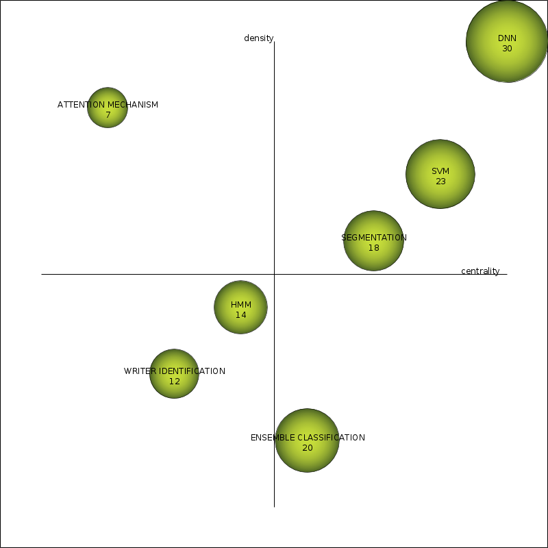 |
| unionDocuments-averageCitations | 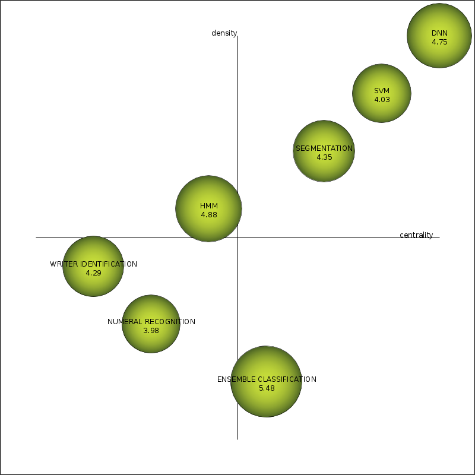 |
| unionDocuments-sumCitations | 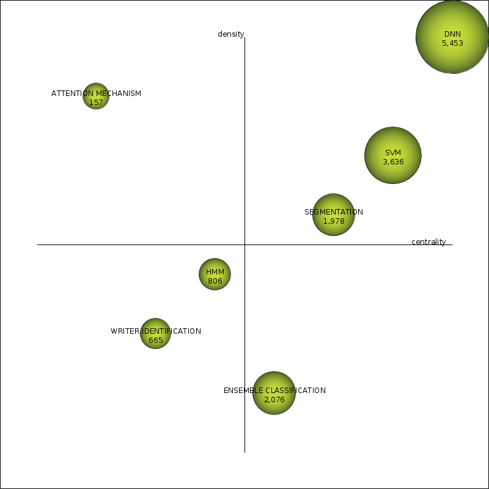 |
| Name | Centrality | Centrality range | Density | Density range |
| DNN | 21.34 | 1 | 8.01 | 1 |
| SVM | 20.71 | 0.86 | 6.5 | 0.86 |
| SEGMENTATION | 13.07 | 0.71 | 2.83 | 0.71 |
| ENSEMBLE CLASSIFICATION | 10.41 | 0.57 | 1.44 | 0.14 |
| HMM | 5.27 | 0.43 | 1.93 | 0.57 |
| WRITER IDENTIFICATION | 4.45 | 0.14 | 1.67 | 0.43 |
| NUMERAL RECOGNITION | 5.27 | 0.29 | 1.47 | 0.29 |
| Name | coreDocumentsdocumentsCount | coreDocumentshIndex | coreDocumentsaverageCitations | coreDocumentssumCitations | unionDocumentsdocumentsCount | unionDocumentshIndex | unionDocumentsaverageCitations | unionDocumentssumCitations |
| DNN | 507 | 24 | 5.51 | 2,794 | 1,138 | 30 | 4.75 | 5,401 |
| SVM | 344 | 15 | 3.96 | 1,361 | 902 | 23 | 4.03 | 3,633 |
| SEGMENTATION | 130 | 12 | 4.33 | 563 | 455 | 18 | 4.35 | 1,978 |
| ENSEMBLE CLASSIFICATION | 59 | 9 | 6.05 | 357 | 379 | 20 | 5.48 | 2,076 |
| HMM | 23 | 6 | 4.52 | 104 | 165 | 14 | 4.88 | 806 |
| WRITER IDENTIFICATION | 18 | 4 | 2.67 | 48 | 155 | 12 | 4.29 | 665 |
| NUMERAL RECOGNITION | 15 | 5 | 4.67 | 70 | 141 | 12 | 3.98 | 561 |
| Name | Cluster's network |
| DNN | 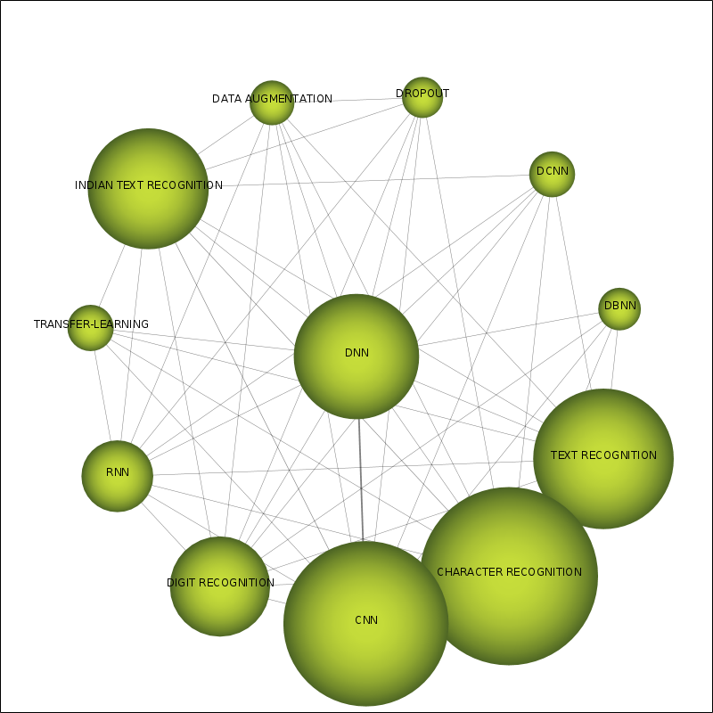 |
| SVM | 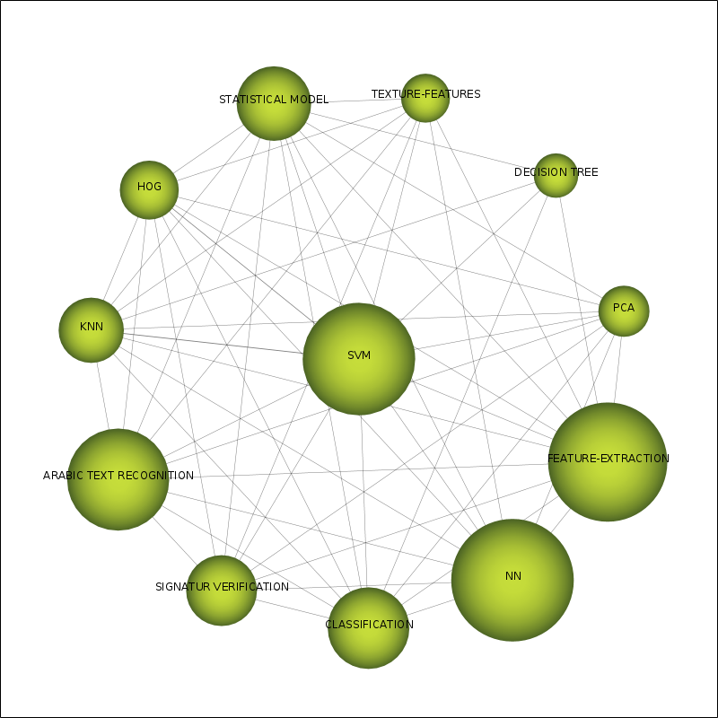 |
| SEGMENTATION | 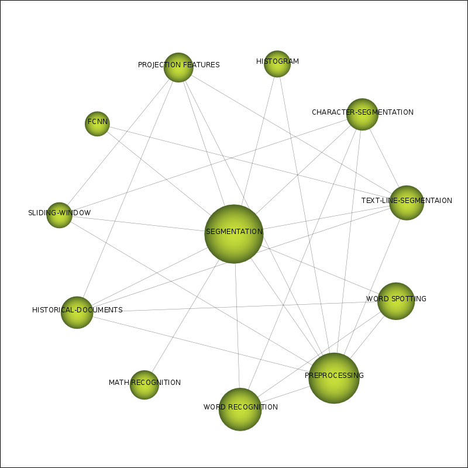 |
| ENSEMBLE CLASSIFICATION | 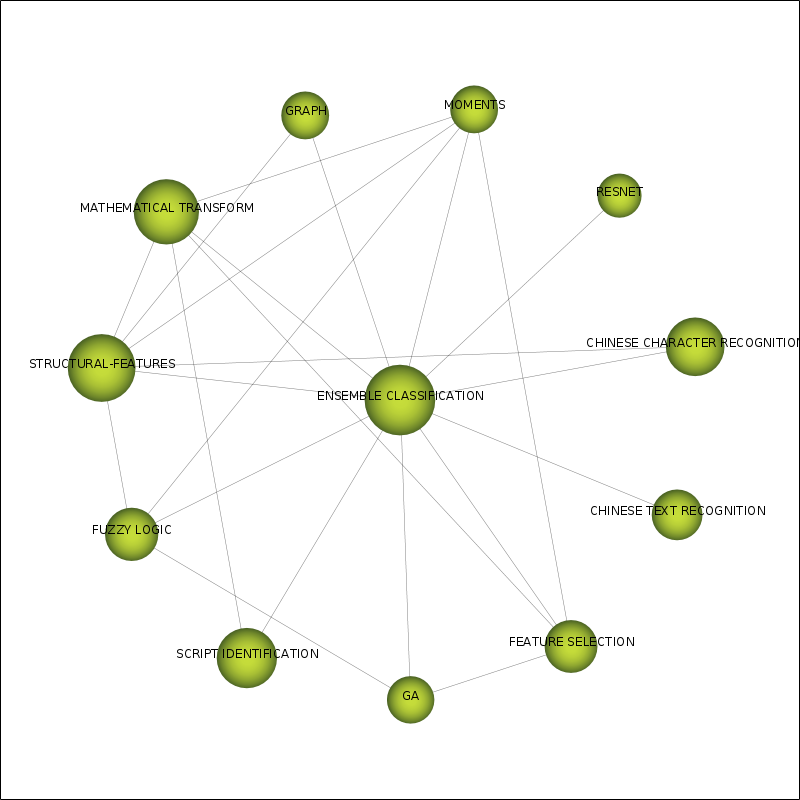 |
| HMM | 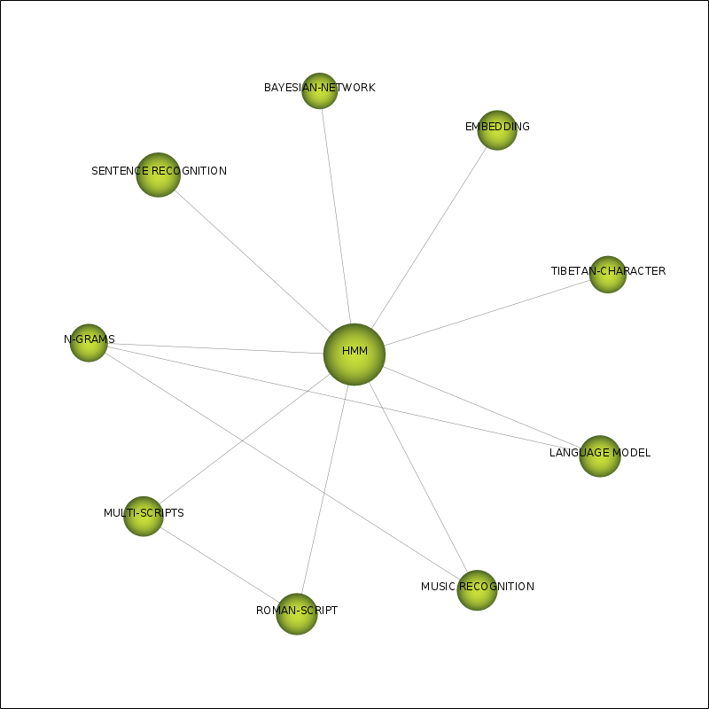 |
| WRITER IDENTIFICATION | 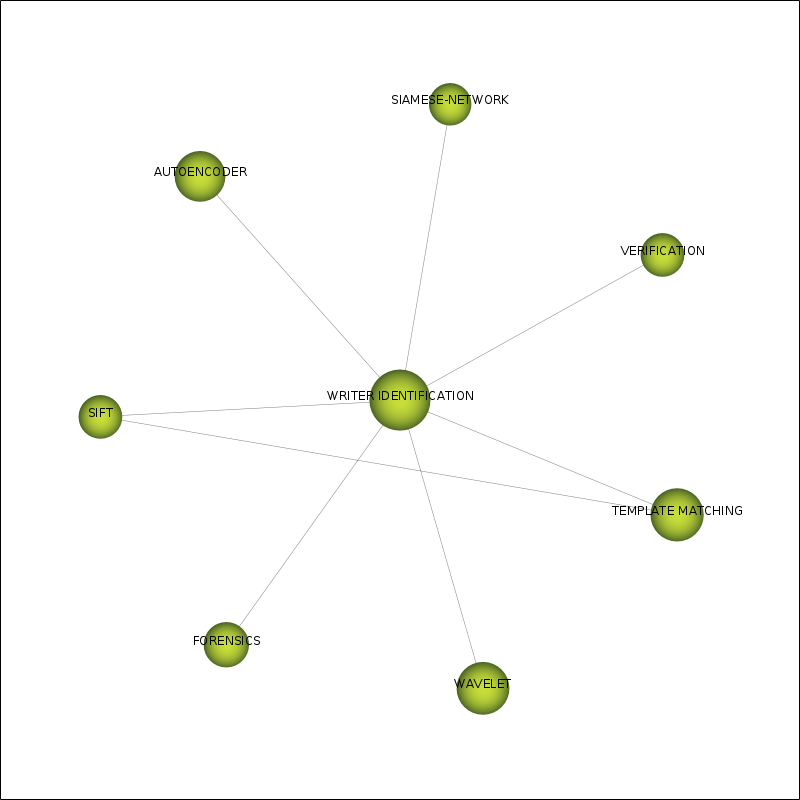 |
| NUMERAL RECOGNITION | 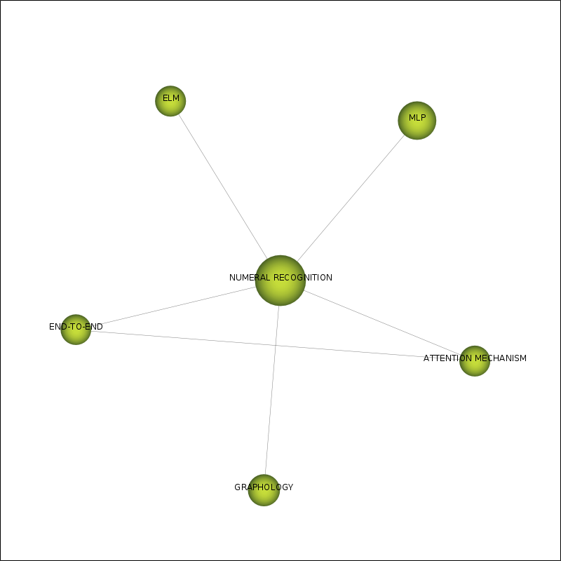 |